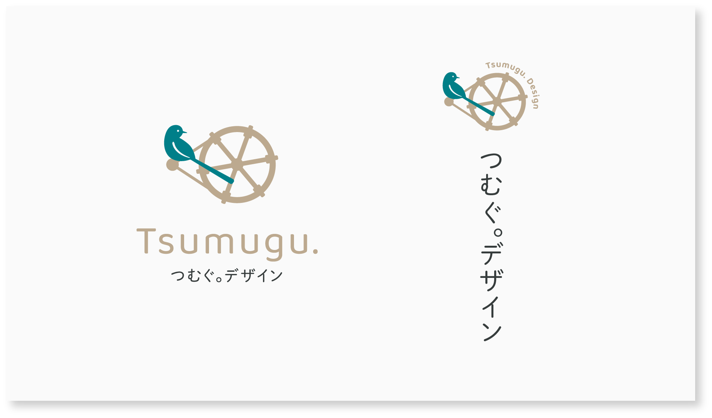
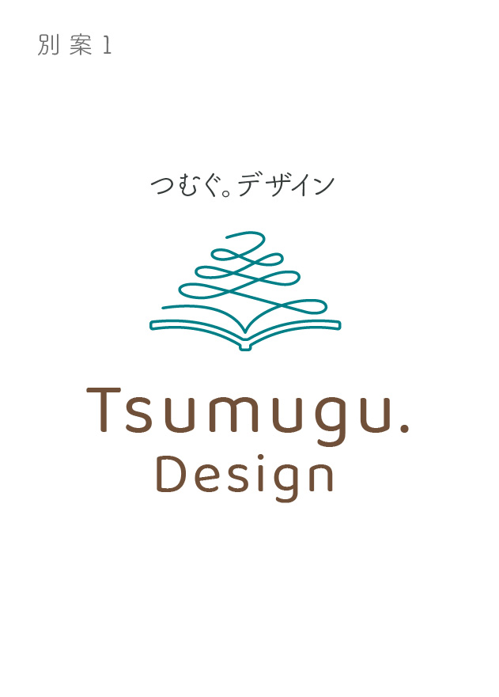
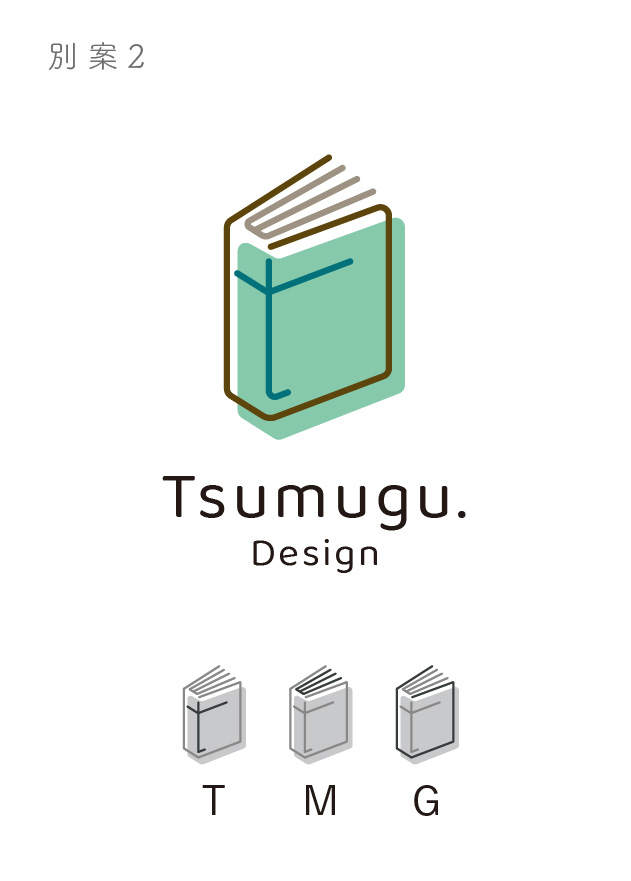

つむぐ。デザイン ロゴ
- カテゴリー
- ロゴマーク
- 担当範囲
- デザイン
- 制作期間
- 3日
- ツール
- Illustrator
「つむぐ。デザイン」のロゴマークをデザインしました。採用したロゴマークと別案の2つも含めて紹介します。
制作のポイント
コンセプトのキーワードである「物語」から、モチーフとして糸車と鳥を選びました。
童話や昔話に登場する鳥たちは、人々の世界を広げたり、教訓などの気づきを与える存在として描かれています。お客様の想いをひとつの物語としてつむいだデザインが、新しい気づきや発見に繋がるものにしたいという想いを込めました。
出身地である福井県の豊かな自然を表現する碧色（へきしょく）とベージュをシンボルマークのカラーとして使い、ナチュラルな雰囲気に仕上げました。
別案
別案1：
お客様の想いを丁寧につむいで、一つの物語（デザイン）をつくる過程を、上から折り重なっていく糸と本で表現し、シンプルで洗練された印象にまとめました。
別案2：
モチーフには、お客様の物語を表す本を選び、モチーフのデザインを「つむぐ」の各頭文字である「T」、「M」、「G」で組み立てることで、サイトのコンセプトを表現しました。

